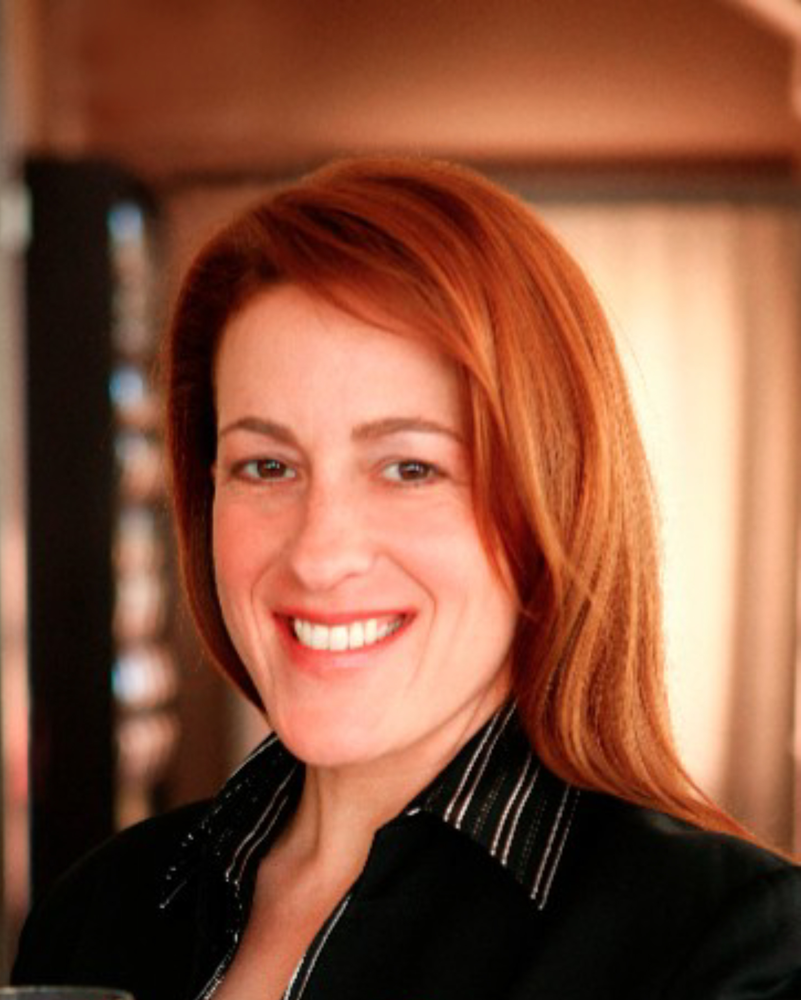

Education
Pre-Conference Wine Workshop:
Wine Ed Gone Wild!
Friday, February 7, 8:00 a.m. - 6:30 p.m.
Featuring Master Somms, Iconic Winery Owners, and Classic Vintage Tastings
About
Extend your Conference experience with an immersive experience through a distinctive offering presented by the CMAA International Wine Society. Friday, February 7 will start with a morning session on developing and elevating your wine program at Pappas Brothers Steakhouse in Dallas, TX, with Master Sommeliers Jack Mason and Barbara Werley. While at the same location, attendees will also hear from speakers David Ramey, owner of Ramey Wine Cellars, on the age ability of Chardonnay and the practical elements of wine and food pairing, with Melissa Monosoff, MS, during a working lunch. The group will then travel to Brook Hollow Golf Club where they will sit down with Jeff Smith, owner of Hourglass, for the Decades of Napa Valley Master Class. The evening will conclude with a cocktail reception before returning to the Gaylord Texan Resort.
Schedule & Sessions
8:15 a.m.
Bus Departure from Gaylord Texan Resort & Convention Center, Grapevine, TX
8:45 a.m.
Arrival at Pappas Brothers Steakhouse, Dallas, TX
9:00 – 10:30 a.m.
Developing & Elevating Your Wine Program, Jack Mason, MS, & Barbara Werley, MS
Join Master Sommeliers Barbara Werley and Jack Mason as they discuss best practices for developing a practical and thoughtful wine program that speaks to individual membership. The presentation and discussion will be centered around examining the techniques of wine list development, the operational decisions of selling and serving wine as well as current trends in the market.
10:30 a.m. – 12:00 noon
Ageability of Chardonnay, David Ramey, Owner of Ramey Wine Cellars
Do you wonder why some Chardonnays age beautifully while others turn golden and sherry-like in a few years? Have you been burned buying bottles of white Burgundy only to find them suffering from the dread premox? Did you think you were buying white wine for the cellar but later realized you had purchased orange wine? Join David Ramey as he explains the causes of this unnecessary evolution. More chemistry than you’ve been exposed to since high school! He’ll cover the ins and outs of bottle closures—raw cork plugs, technical corks, screwcaps, plastic plugs, Vinoloks… No course prerequisites necessary! Yummy Chardonnays to taste in the lab portion of this class. Don’t miss it!
12:15 – 2:15 p.m.
Practical Elements of Wine and Food Paring, Melissa Monosoff, MS
Join us for a working lunch with Master Sommelier Melissa Monosoff who will share some sommelier secrets to great food and wine pairing. She will break down practical pairings and interactions that can be applied to many different cuisines and beverages. This practical experience and demonstration with lunch will show how and why certain parings work while others do not.
2:15 p.m.
Bus Departure to Brook Hollow Golf Club,
Dallas, TX
2:45 – 4:15 p.m.
Decades of Napa Valley Master Class: The Evolution of Style, Jeff Smith, Owner of Hourglass
Napa Valley has gone through an amazing metamorphosis over the past 50 years. It has evolved from a sleepy ag community, to one of the world’s premier wine growing regions. Jeff Smith, founder of the Hourglass Wine Company, had the great fortune to grow up in St. Helena with backstage access to Napa’s unique rise to prominence. With a seat at the dinner table of many of the founding families that transformed the Valley, he gained an unusual insider’s perspective on Napa’s prominent role in the American food and wine revolution.
In this Master Class, Smith will walk you through 50 years of winemaking and the evolution of style in Napa. Part vintner perspective, part wine geek, part historian, part chronicler of style, Smith will dig into what makes Napa so unique and how its evolution came about through personalized stories and a sensory evaluation of the changing wine styles. You will taste wines from each decade reaching back to the 70s, and breakdown how and why they came into existence.
This is a once in a lifetime opportunity to delve into the backstory of Napa Valley, and gain a unique perspective on America’s premiere wine growing region.
4:30 – 6:00 p.m.
End of the Day Cocktail Reception
Just in case you didn’t drink enough wine!
6:00 p.m.
Bus Departs for Gaylord Texan, Grapevine, TX
Presenters

Jack Mason, MS
Jack Mason, Director of Wine Operations of the Pappas Bros. Steakhouse Houston and Dallas locations, achieved Master Sommelier status at the very young age of 27 and one of the youngest to do so. He is one of only 12 esteemed Master Sommeliers currently in the state of Texas and one of 164 Master Sommeliers in the United States.
Born in Biloxi, MS, Mason developed a fondness for the food and beverage industry while working in local restaurants in his hometown of College Station, TX. Mason’s interest in wine was piqued while taking a wine education requirement class while pursuing a culinary degree from the Culinary Institute of America (CIA) in Hyde Park, NY. After graduating, Mason soon left to enroll in Hospitality Management at Cornell School of Hotel Administration. It was there he met his future mentor, Greg Harrington of Gramercy Cellars, and became a wine course Teaching Assistant. To further his education, he spent summers back in College Station working within wine shops and restaurants.
Mason returned to Texas following his graduation to begin his career in Houston as a Sommelier at the grand award-winning Pappas Bros. Steakhouse while simultaneously studying for and passing the Advanced Exam of the Court of Master Sommeliers.
In 2013, Mason moved to New York City to work in various notable restaurants. He refined his knowledge and passion of Italian wine as Sommelier of several Michael White Italian restaurants, including Ai Fiori and Marea. The following year, Jack joined famed restaurateur Danny Meyer to open Marta as the wine director, where he focused on wines from Italy and Champagne and furthered the team’s beverage education. In 2015, Jack passed the Master Sommelier Examination and was inducted into the Court of Master Sommeliers.
Mason decided it was time to return to his roots and moved back home to Texas in November 2016. He re-joined Pappas Bros. Steakhouse in Houston as Director of Wine Operations at the Houston and Dallas locations. He is responsible for an inventory of more than 60,000 bottles of wine and close to 5,500 selections from the three restaurant’s extraordinary wine collections.
In his current position, Mason informs guests on the nuances of wine quality that make for a stunning dining experience. He also is responsible for providing continuous wine programing, education for both the service staff and patrons, and enhancing the wine drinking experience at each location.
Mason has been featured in Forbes’s annual “30 Under 30” list of outstanding young professionals nationwide, Zagat’s “30 Under 30” list in New York City, and was named Wine & Spirits “Best New Sommelier 2015.” He was also featured in the series “Uncorked” on the Esquire Network that followed his journey to receiving his MS certification.
Melissa Monosoff, MS
Melissa Monosoff is a graduate of the Culinary Institute of America and has honed her skills at the top restaurants in Philadelphia as a cook, sommelier, bartender, and beverage director. These restaurants include the finest in the region, such as the Fountain Restaurant at the Four Seasons Hotel, Striped Bass, and most recently Savona in Gulph Mills, PA managing a 1,200-selection wine list and a well-recognized beer and cocktail program. Monosoff has been the Education Director for the Court of Master Sommeliers since 2013.
Monosoff earned her Master Sommelier Diploma in February of 2010; she the 17th woman in the world to hold this title. Her passion for all things wine and beer related, have earned her several accolades. In 2009 and 2010 both Philadelphia Magazine and Main Line Magazine named her “Best Sommelier.” Wine & Spirits Magazine recognized her as one of America’s “Best Young Sommeliers” and she was a James Beard Foundation nominee for “Outstanding Wine Service” in 2011. In 2018, Monosoff published her first book and is a contributor to Guildsomm.com.
In addition to her wine knowledge, Monosoff is becoming a recognized name in the beer community having completed her Certified Cicerone in June of 2013. She is now working towards her Advanced Cicerone Certification.

David Ramey
Ramey Wine Cellars was founded in 1996 by David Ramey and his wife Carla. After sixteen years making wine in Sonoma County, and firmly establishing Matanzas Creek and Chalk Hill wineries in the marketplace, Ramey crossed the Mayacamas to spend six years in the Napa Valley - first as VP Winemaker for Dominus Estate and project manager for the construction of their new winery, then helping Leslie Rudd reshape the Girard Winery into Rudd Oakville.
Over the years, Ramey has helped pioneer traditional, artisan winemaking techniques in California during a period when making wine by the University book was the norm. His efforts have helped shape the way many wines in the United States are made today, including the elimination of skin contact for most white grapes; the use of oxidized juice in making white wine; sur lie aging of white wines in barrel; malolactic fermentation of Chardonnay; native yeast fermentations; harvesting fully mature fruit; eliminating acidification of red wines; and bottling without filtration.
In 2014, he, along with his wife Carla, founded Sidebar Cellars, which adheres to the same quality winemaking at Ramey Wine Cellars while producing wines that are of different varietals (Kerner, Sauvignon Blanc, Rosé, Old Vine Zinfandel, etc.). These wines are also meant to be consumed when they are young and fresh.
In addition to managing Ramey Wine Cellars, Ramey has enjoyed consulting for a select handful of clients in the North Coast.
About Ramey Wine Company and Sidebar Cellars
David and Carla Ramey founded Ramey Wine Cellars in 1996 and Sidebar Cellars in 2014. The winery produces authentic, hand-crafted wines made in an Old-World tradition, coupled with New World innovation and California terroir. Owned exclusively by Ramey and his wife Carla, grapes are sourced from vineyards with which he has worked for many years.
Consistently rated among the best wines in California, Ramey Wine Cellars remains committed to Chardonnay, Cabernet Sauvignon, Pinot Noir, and Syrah as its primary varietals. Sidebar Cellars adheres to the same quality winemaking while producing wines that are of different varietals (Kerner, Sauvignon Blanc, Rosé, Old Vine Zinfandel, etc.) and are also meant to be consumed when they are young and fresh.

Jeff Smith
Jeff Smith had the unique experience of growing up around the dinner tables of many prominent wine families who transformed Napa Valley into a world class wine growing region. With this unique vantage point, he noticed a paradigm shift in the early ‘90s toward small terroir driven estate wines… wines truly defined by their place. He took a small four-acre family vineyard in St. Helena, replanted it to Cabernet, enlisted the help of winemaker friend Bob Foley, and launched Hourglass. From the inaugural 1997 release, the Hourglass estate bottling has evolved into one of Napa’s most esteemed Cabernets. In 2006, with the help of two partners, Smith procured the Blueline estate in the Calistoga appellation with the goal of finding a new vineyard site that could rival the Hourglass estate. Smith constructed a cutting-edge winery at the Blueline estate, and crafted a series of vineyard designated wines from the property. Hourglass is now dedicated to producing limited quantities of modern, vineyard designated, Bordeaux varietals from the two vineyards.

Barb Werley
Barb Werley is a graduate of University of Iowa and the Culinary Institute of America. She achieved the Master Sommelier in 1997.
She is an Adjunct Professor at UNLV, Harrah School of Hospitality.
Her past employment highlights include the Ritz-Carlton in Washington, DC, The Homestead in Hot Springs, VA, Caesars Palace in Las Vegas, NV, the Arizona Biltmore in Phoenix, AZ, the Four Seasons at Troon in Scottsdale, AZ, and The Greenbrier in White Sulphur Springs, WV.
Registration
Workshop Registration
The cost for registration is $400 for CMAA members and $500 for CMAA non-members. This session is limited to 50 participants and is subject to minimum registration requirements. Program is subject to change.
Registration for this Pre-Conference Workshop is separate from World Conference registration but may be done simultaneously. Each workshop and seminar has its own fee. Class space is limited. Registrations will be processed in the order in which they are received and only with full payment. Workshop registrations will be available on site, if space permits. All persons registering on site must pay for the workshop prior to attending the class.
Visit https://www.cmaa.org/conference/ to register today.
Workshop Cancellation
Cancellation will be accepted until January 15, 2020, with no penalty. A refund of the fee – minus a 25 percent penalty – will be given for cancellations received by February 5, 2020. No refunds will be granted for requests received after February 5, 2020. All registration cancellations and refund requests must be made in writing. To be valid, submit all requests to CMAA Registration at https://www.cmaa.org/resources/contact/cancel.html. Substitutions are gladly accepted; substitutions of registrations are permitted prior to the Conference and on site. Only one substitution is permitted per original registrant. The individual submitting the substitution request is responsible for all financial obligations (any balance due) associated with the substitution.
Warren Arseneaux Honorary Scholarship
The scholarship provides tuition for a CMAA International Wine Society member who has a passion and love for wine and is interested in continuing his or her professional development, to attend the BMI Wine and Food Experience or other education opportunity as approved by the IWS Board of Managers. Details
Wine Webinars
Quarterly, the Wine Society hosts a wine-related webinar for all CMAA members. Two of these webinars are virtual wine tastings and the two other are on other wine education topics. Attendees are responsible for acquiring the wines on their own for participation in the virtual tasting. One CMAA Association Activity Credit will be awarded to those individuals who register and attend the entire program. More
Wine on the Web
Active membership is open to all Professional, Alumnus (not less than 21 years of age) and Retired CMAA members. Associate memberships are available to individuals who are 21 years of age or older and are not
members of CMAA. These individuals must be from a club that has a CMAA and Wine Society member to sponsor them.
Find out more on how to join the CMAA Wine Society today!